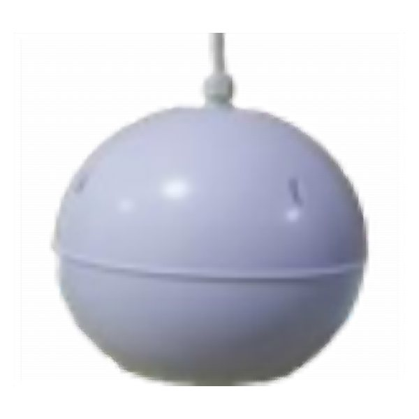

الرئيسية / ساوند سيستم وسماعات / MT-HG-510P

سماعة تعليق (Pendant) 10 وات (خط 100 فولت) - أبيض
Master Team · MT-HG-510P
نفذ المخزون حالياً
سماعة للأماكن الكبيرة والمساحات الخارجية والحدائق.
| الماركة | Master Team |
|---|---|
| الموديل | MT-HG-510P |
| النوع | سماعات عمود وتراك وخارجية |
| القدرة | 10 وات |
| التوصيل | 110V |
توريد وتركيب وبرمجة · ضمان 24 شهر · توصيل في القاهرة الجديدة والشروق
المواصفات التفصيلية
- RATED POWER : 10W
- VOLT MT-HG-510P
- LINE Voltage : 110V
- SIZE : 180MM
- W HITE
- ROCK SPEAKER